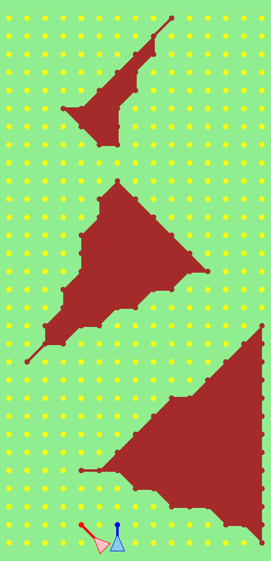

SamurAI Jockey Rule Summary
-
The game is a race of two players.
-
In each step, players can
change their speed by ±1,
in either x or y direction, or both.
-
There are obstacles in the course.
Moves colliding with them are canceled.
-
Players have limited fields of vision.
Obstacles far away cannot be seen.
-
When players' moves cross or touch,
the move without priority is canceled.
-
The player behind (with the smaller y-axis) has
the priority.
-
When at the same y-axis, one to the left (with
the smaller x-axis) has the priority.
-
Exception: The move should not reach nor go through
the opponent's original position,
or the move is canceled.
-
Two players will never be on the same position
at the same time.
-
A match comprises of two races
on the same race course, but with the start positions exchanged.
One with the shorter total goal time
is the winner.
Race Example